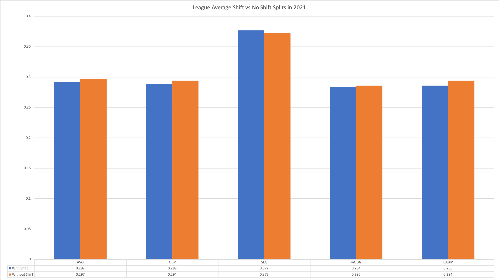
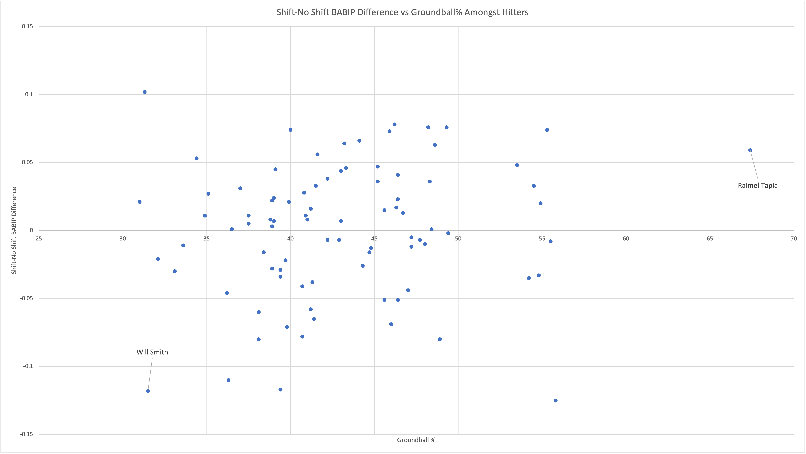
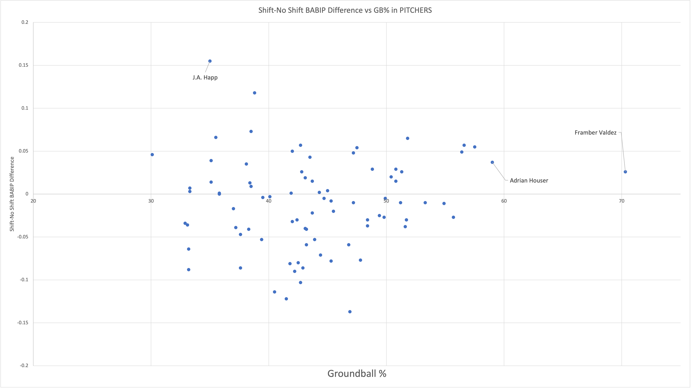

To Shift or not to Shift
By Gordon Liang | March 28, 2022

Baseball is an ever-changing sport that continually experiments with new approaches to advance the game. From (alleged) juiced baseballs to moving back the rubber in the Atlantic League, commissioner Robert Manfred has explored a plethora of new ways to increase offensive production in America’s pastime. As Manfred unilaterally manipulates the game for the hitters, defenses have taken strides to counteract it. Their biggest effort, the shift, dies with the new Collective Bargaining Agreement negotiations.
As short-lived as the shift was, it still brought a new element to the sport that drew the eyes of baseball fans all over the world. I still remember watching Jose Altuve step into the outfield during a game in Oakland. “Dad! Dad! Look at where Altuve is!” I called eagerly to the man who introduced me to this sport. I pointed at the left side of the infield, showing him the lone third baseman now playing at the shortstop area. It was a perspective-changing experience. I was watching the sport evolve in front of me.
Unfortunately for baseball fanatics, shifting evolved the sport in the wrong direction. It limited offense. In a generation when the average attention-span is decreasing, baseball can’t afford to limit offense but instead it needs more and more of it. As we bid our farewells to the shift, let’s reflect on the mark it left in its stint in baseball.
The shift opened the floodgates for a good chunk of the advanced metrics we have today. Statcast’s Expected Metrics are founded on the basis of ignoring hit direction. If two baseballs are hit at the same exit velocity and launch angle, we’d expect the same results, right? The hitters put in the same work but one had their ball lined through the gap for a single while the other landed into the glove of a perfectly positioned fielder. While expected statistics neglect hit direction in efforts to account for defensive alignment (and park dimension), Fielder-Independent Pitching (FIP), as the name suggests, ignores it altogether. FIP only accounts for the three true outcomes: a homerun, walk or strikeout. True outcomes are typically unaffected by the shift so like expected stats, they work to give an idea of a player’s skill regardless of factors they cannot control.
The shift obviously had its influence on the field or else the hitters wouldn't be calling for its downfall. By many metrics, the shift did its job in limiting offense but what was the magnitude of its influence on how the game is played? Since Statcast started tracking shift rates in 2016, we’ve seen baseball go through a shift of its own. Fans have seen a major decline in groundball rates as shift rate continued to rise. Before the shifting era, groundballs up the middle would go through the gap for an easy single. But now, a middle-infielder is positioned behind second base daring you to hit the ball to him. With this, we would expect groundball pitchers to be at a heavy advantage with the shift and groundball hitters to be at a heavy disadvantage. The numbers don’t show this.
Amongst pitchers in 2021 who threw over 30 innings under shift and traditional conditions, the shift showed no consistent influence. Framber Valdez had, by far, the highest groundball% out of this pool of pitchers yet his Batting Average on Balls in Play (BABIP) was higher in shift
conditions than it was in traditional conditions. The same applied for Adrian Houser who had the second-highest groundball% in our pool. Logically, a groundball pitcher should see a lower BABIP with the shift than without because a higher proportion of their batted ball events are subject to the shift’s influence. That obviously doesn’t seem to often be the case as most of the points on the right-end side are placed above the x-axis meaning their BABIP was higher in the shift. The rule worked in some scenarios as J.A. Happ, who, by many metrics, was harmed the most in this pool by the shift, induced a groundball only 35% of the time. But for the most part, as visualized below, inducing a groundball doesn’t correlate with an increased efficacy with the shift. If anything, the opposite conclusion can be drawn: is the shift hurting pitchers who rely on it more?
One concern that may arise from this is the use of BABIP because it may include hits that aren’t necessarily affected by the shift. BABIP attempts to address this by ignoring homeruns because a shift rarely ever affects a homerun (though theoretically, it can happen). A different approach
could have been to isolate BABIP data for groundball events only, but that defeats the purpose of comparing the data across different groundball rates.
The same was true for the other side of an at-bat. Looking at hitters who had at least 30 groundballs in both conditions, no patterns were distinguishable. Raimel Tapia of the Colorado Rockies had the highest groundball rate in our pool but he saw a sizable increase in BABIP when the shift was on. On the flipside, Will Smith of the Los Angeles Dodgers had one of the lowest groundball rates yet he was still heavily hurt by the shift. Similarly to the pitcher’s perspective, we’d logically expect a negative trend but, just like in the pitcher’s graph, a correlation isn’t seen.
As I mentioned earlier, we’ve seen a drastic trend in batted ball tendencies with the shift rushing into prevalence. Groundballs are down and flyballs are up. But the numbers haven’t suggested that more groundballs lead to better results on any end of an at-bat. So what’s the value in shifting? Have hitters already adapted to the shift? Even in the grand scheme of things, the difference between shift and traditional is seemingly unsubstantial. Oddly enough, the league Slugging Percentage sees an increase when the shift is on meaning extra-base hits are more prevalent when the shift is. The shift may not be as effective as it sounds, but it brings a more exciting approach to baseball and the sport would suffer in 2023 if this element dies.